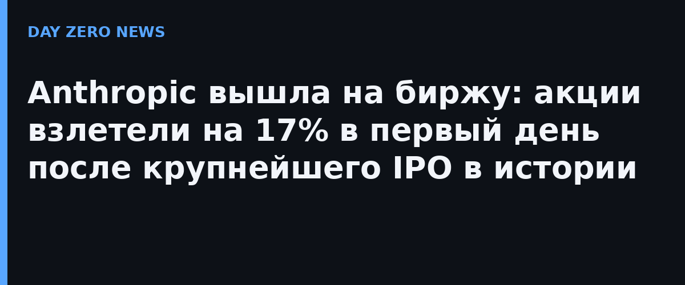

19 ноября 2026 года акции Anthropic под тикером ANT начали торговаться на Nasdaq Global Select Market. Днём ранее компания официально объявила цену размещения — 83 доллара за акцию. Сам выход на биржу сопровождался сбором 81,3 миллиарда долларов — это крупнейшее первичное публичное размещение в истории: июньский IPO SpaceX привлёк 75 миллиардов до реализации допэмиссии (и 85,7 миллиарда с ней). Если же учесть дополнительное частное размещение Anthropic на 26 миллиардов, общая сумма привлечённых средств — около 107,3 миллиарда долларов.
Акции открылись на отметке 111,50 доллара — на 34,3% выше цены размещения, — в течение дня поднимались выше 115, а к закрытию опустились до 97,17. Это всё равно плюс 17% к предложению, а капитализация по итогам первого дня составила примерно 1,27 триллиона долларов. Прибыль на акцию при этом отрицательная: рынок явно платит не за текущий доход, а за базовые модели, корпоративное внедрение и будущую монетизацию. О убытках в 104 миллиарда долларов в биржевом проспекте мы уже рассказывали.
По данным, которые приводит IT之家 со ссылкой на корейское издание ETNews, годовая выручка Anthropic на конец октября превысила 81 миллиард долларов, а число корпоративных клиентов с годовыми расходами от 100 тысяч долларов перевалило за 11 900. Часть капитализции, впрочем, формально принадлежит обществу: 5% акций компания передала «Фонду общественной пользы» — на старте это примерно 156 миллиардов долларов.
Reuters называет дебют Anthropic тестом для всей индустрии: впервые рынок так широко оценивает обещания ИИ-отрасли против её рисков. Для разработчика Claude публичность означает и новый режим работы — отчётность станет открытой, включая те самые цифры по безопасности и инцидентам, которые раньше компания раскрывала нехотя. Дебютные торги прошли без срывов; что будет дальше — вопрос уже к квартальным отчётам.